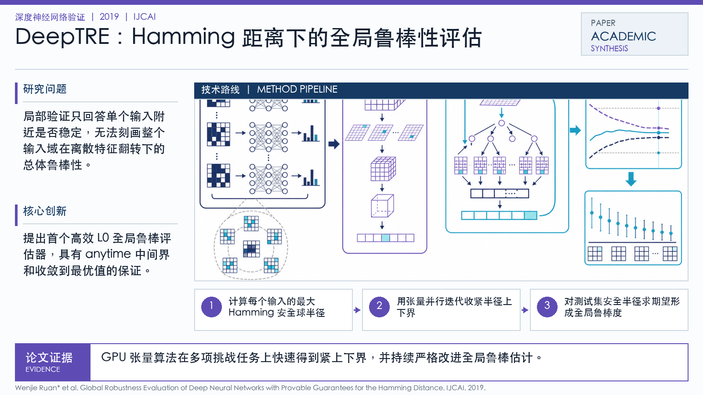

Problem
解决的问题
局部验证只回答单个输入附近是否稳定，无法刻画整个输入域在离散特征翻转下的总体鲁棒性。
Verification on DNNs · 2019 · IJCAI
Global Robustness Evaluation of Deep Neural Networks with Provable Guarantees for the Hamming Distance
Problem
局部验证只回答单个输入附近是否稳定，无法刻画整个输入域在离散特征翻转下的总体鲁棒性。
Value
GPU 张量算法在多项挑战任务上快速得到紧上下界，并持续严格改进全局鲁棒估计。
Paper-grounded Academic Summary
该代表页依据原文摘要、贡献段与方法图注生成。方法视觉由 ImageGen 按论文证据逐篇绘制，中文研究问题、技术路线、创新点与实验结论采用确定性排版，以保证内容与字符准确。
打开原文 PDF
Technical Route
Innovation